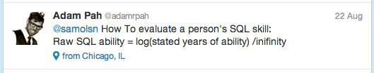
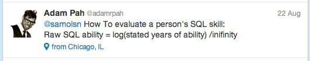
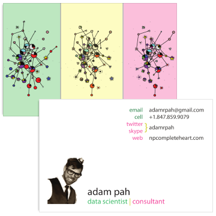
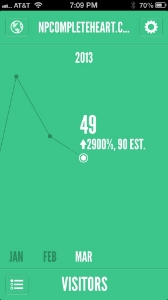

You know what, I'm going to stand by it.



I finally got around to making my own business cards. I went with moo because of their quality (I actually got some moo business cards at Datascope Analytics and was really impressed with them). Overall it was a pretty easy affair using their templates in Illustrator, if anything the hardest part was choosing what images to use.
This post is supposed to carry on from setting up a Django app on Heroku with MongoDB and help fill in a hole from the MongoDB Tumblelog tutorial. The biggest question is, what is my directory structure? The tutorial jumps around a lot, assuming that you already know where everything should go. So let's tackle that first.
Or more accurately, the list of things that I did last night to spiffy up the site. So what did I do in reality?

So you want to make a Django app with a MongoDB backend?
Better yet do you want to deploy to Heroku and use MongoHQ so there's minimal set up on your end and a free testing sandbox?
That's what I've done with this site (which is why it can be unresponsive also, I'm using all free at the moment).
After doing it once I thought I had it down pat in terms of my online sources and thought that I could replicate
that success with minimal fuss. I was just proven wrong when I went too far, too fast and borked my app into a
state that I didn't know how to fix it out of. So here is an actual step by step, both for myself and others.
This is actually the accompanying presentation I gave to our lab a few months ago on how to make the line graph in d3.js that I posted earlier. It's intended for the lab audience (people who know how to program and use the command line but have no experience with making a web page). Hopefully it'll be helpful to others.
We switched from SVN to Mercurial in my lab about a year ago now after we considered all of our needs as a bunch of researchers, many of whom don't want to care about or are not that interested in the tools we use.
I upgraded to OSX Lion over winter break (a post about which was supposed to be written forever ago), but I finally have come back to it. Upgrading has been completely obnoxious. If it weren't for how much I really need effective password management software (1Password, for what it is worth), I would have downgraded to Snow Leopard immediately. This is just a short collection of the fixes that I've done since switching (or what I can remember of them).
This blog is my first time starting a web page (for real at least) and using Ruby on Rails. Despite having some prior experience with Django I chose Ruby on Rails for two main reasons: (1) it integrates seamlessly with Heroku, which is an amazing service (for free! at least for my needs) that provides basic app hosting and is not replicated on the Django side of web development and (2) it's something I haven't done yet and I would rather learn something new. I'm not a massive fan of Django, so even though my primary programming experience is in python it didn't deter me from switching over for this. At a later point, I may detail what I feel are the differences between the platforms and which one excels in what area, but there's plenty on the web that goes on about the differences already.